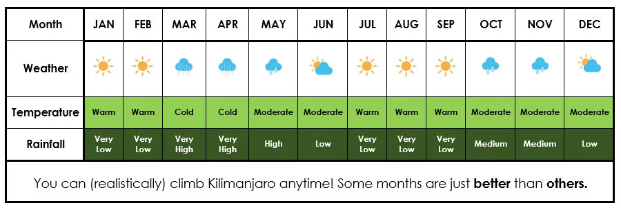

"Tanzania has a pleasant, tropical climate with regional variations and wet
and dry seasons. Kilimanjaro has its own microclimate due to its vast size
and free-standing nature. Some say that climbing Kilimanjaro is like travelling
from the equator to the North Pole, because the mountain has five distinct climate
zones and you’ll pass through each of them on your way to the summit! You should
therefore come ready to deal with varying conditions regardless of what time of
year you decide to climb. Our comprehensive equipment list and guidance will help
you prepare."
THE WEATHER ON KILIMANJARO - WHEN TO GO?

April – June
Themain rainy seasonlasts from the end of March through to mid June.
As elsewhere in the world, when exactly it rains and when it stops is
impossible to predict. It’s the warmest time of the year in Tanzania,
but those months are so wet that many operators simply do not offer
climbs in April/May at all.
June – August
The rain gradually decreases, and so do the temperatures on Kilimanjaro.
The weather on Kilimanjaro is fairly dry and clear but the nights will
be bitter cold. June is quiet, but the number of climbers increases as
the year progresses.
August – October
August and even more so September is the peak climbing season on Kilimanjaro.
The weather is good with many clear days and warmer than in June/July. You may,
however, get clouds blanketing the forest/moorland zone, and on the southern
routes you may get rained on on the first days. But once you leave the rain
forest behind all is good! The good conditions last into about mid Occtober
when the build up for the short rains begins.
October/November
The weather on Kilimanjaro becomes more unstable and the number of climbers drops.
As in all tropical regions of the world, the wetter time of the year announces itself
with afternoon clouds and occasional thunderstorms. As long as you are equipped to
withstand the occasional shower, this should not present any major problems.
November/December
November is the small rainy season, and the rain lasts into mid December.
The temperatures have dropped and the rain brings with it all the hazards
that I described at the top of the page. Not the best time to climb Kilimanjaro.
December/January
The four to six weeks around Christmas and New Year are the second peak climbing season on Kilimanjaro.
Traffic is extremely high despite there still being a good chance of rainfall and thick clouds in the
lower regions. It’s not a time I would choose.
January-March
Mid January to mid March is also a good time to climb Kilimanjaro. The weather is reasonable ,
not too cold, not too wet, and there aren’t as many climbers. The days are mainly dry, beautifully
clear with few clouds and occasional brief showers. In March the chances of rain gradually increase
as you approach the long rainy season. See above.